歯を失った・入れ歯が合わない～インプラント・入れ歯治療～
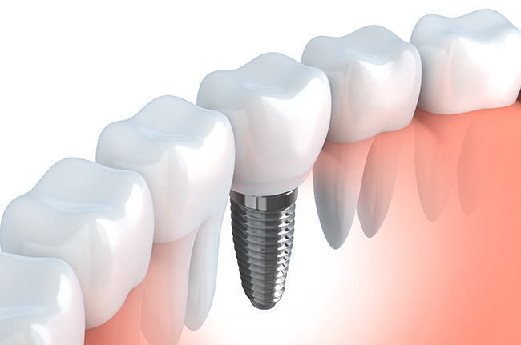
千歳船橋駅から徒歩3分にある歯医者「中村歯科医院」では、歯を失った方や入れ歯で不便な思いをされている方へ、インプラント治療・入れ歯治療を行っています。今や第2の永久歯と称されるほど、天然歯に負けない咬み心地を実現できるインプラントは、入れ歯に代わる治療法として注目されています。
インプラント・入れ歯治療をお考えの方へ
歯を失った方へ
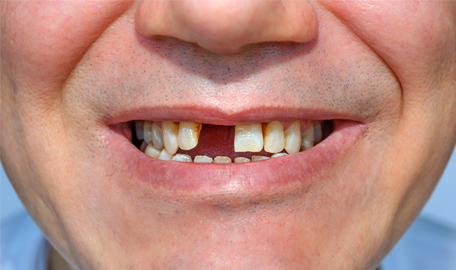
むし歯や歯周病、物理的な欠損などで歯を失った場合、従来の入れ歯による治療のほかに、近年ではインプラント治療を選択される方も増えてきています。インプラントと入れ歯には双方に特徴があり、患者様の体質によっても変わってくるため、十分に比較して納得のいく治療をお選びください。当院ではしっかりとカウンセリングの時間を設けており、メリットだけでなくデメリットについてもきちんとご説明します。患者様一人ひとりに最適な治療をおすすめしておりますので入れ歯やインプラン治療をお考えの方は、ぜひご相談にご来院ください。
入れ歯をお使いの方へ
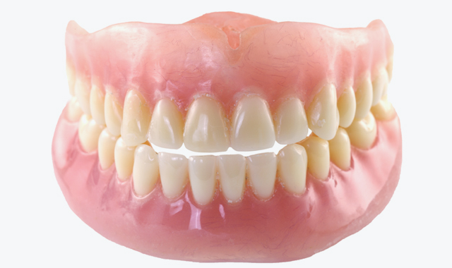
入れ歯が合わなかったり、ズレて痛みを感じたりされている方は、当院にご相談ください。入れ歯は、一人ひとりに合わせた調整や交換によって、快適に咬む喜びを楽しめるようになります。近年では入れ歯の技術も進歩し、自然な見た目のものも登場しています。インプラント治療と合わせてお選びください。
インプラントによって丈夫で自然な歯を手に入れる
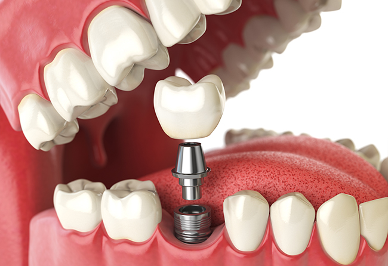
インプラントとは、失った歯の代わりに人工の歯を取り付ける治療です。歯を失った部分の顎の骨にチタン製のインプラント（人工歯根）を埋め込み、その上からセラミック製の人工歯を被せます。人工歯根の素材であるチタンは生体親和性が高く、顎の骨と結合してしっかりと固定されるため、約8割の咬む力を取り戻せるといわれています。
また、セラミック製の人工歯は見た目・質感ともに天然歯とくらべても遜色ないものとなっています。しっかりと咬める喜びと、自然な見た目を望まれる方は、インプラント治療をおすすめします。
インプラント治療のメリット
- 天然歯のような見た目
- 天然歯の約8割の咀嚼（そしゃく）力
- 治療の際に周囲の健康な歯を削らなくて済む
- 顎の骨が痩せにくい
当院のインプラント治療
当院では、デジタルレントゲンを使った精密検査により、インプラントを埋め込む顎の骨の量や位置を確認。状況に合わせた精度の高いインプラント治療を行っています。高い技術を持つ医師や歯科衛生士が在籍しているので、安心してお任せいただけます。
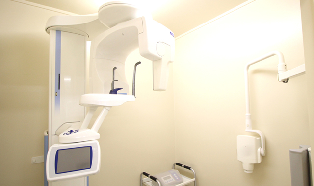
また、顎の骨の量が足りないなどの理由でインプラント治療を受けられなかった方も、当院へご相談ください。顎の骨の高さが足りない方には、上顎の洞底部を持ち上げてできたスペースに、骨補強材などを注射して骨の高さを獲得する「ソケットリフト」や、骨組織再生重宝で、インプラント治療を行いたい部分の骨の再生を促す「GBR」などの治療を行います。
インプラント治療の流れ
- 1カウンセリング
-
はじめにカウンセリングを行い、ご不明な点やご要望をお伺いします。インプラント治療のメリットとデメリットについても丁寧にお話いたします。患者様の不安を取り除いたうえで、治療に入りますのでご安心ください。
ただし、糖尿病や内臓疾患などの持病を持つ方は、インプラント治療にリスクを伴うため、受けることはできません。
- 2精密検査
- 治療に入る前に、レントゲンで口腔内の撮影をし、精密検査を行います。
- 3治療計画のご提案
- 精密検査の結果を踏まえ、患者様のご要望と照らし合わせながら治療計画を立案いたします。
- 4人工歯根の埋入手術
- インプラント治療の最初のステップです。治療を行う箇所に局部麻酔を施し、歯ぐきを切開して顎の骨にチタン製の人工歯根を埋め込みます。当院では世界中で高い評価を得ているストローマン社のインプラントを使用しています。このインプラントは、世界中で多く使われているため、各地でメインテナンスが可能です。
- 5治療期間
- 人工歯根と顎の骨が結合し、安定するまで2～4ヵ月ほど様子を見ます。この期間は人工歯根の上から仮歯を被せるため、日常生活に支障はありません。傷口の治癒にかかる期間は骨の状態や体質によって個人差があります。
- 6上部構造の装着
- 人工歯根が顎の骨と結合したことを確認できたら、アバットメントと呼ばれる連結器具を装着します。歯ぐきが治癒し、上部構造である人工歯を装着できるようになるまでしばらく様子を見ます。
- 7人工歯の装着
- アバットメントの上に人工歯を装着します。人工歯の形や色味は患者様の天然歯に合わせて製作したものを使います。これでインプラント治療の完了です。
マイクロスコープを使ったインプラント治療
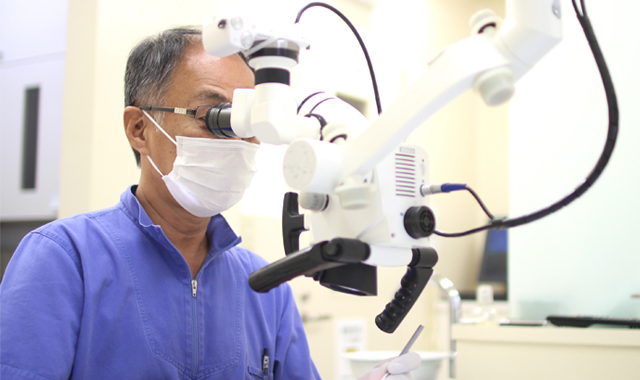
歯科治療の中でも非常に難易度の高いインプラント治療。当院ではマイクロスコープを用いた精密治療を行っています。肉眼では捉えきれない小さな患部でも、肉眼の3～24倍の拡大視野を持つマイクロスコープなら精密治療できるため、治療の成功率を飛躍的に高めることができます。インプラント治療に不安のある方、他院での治療を断られた方も、ぜひ一度当院までご相談ください。
定期的なメインテナンスが重要です
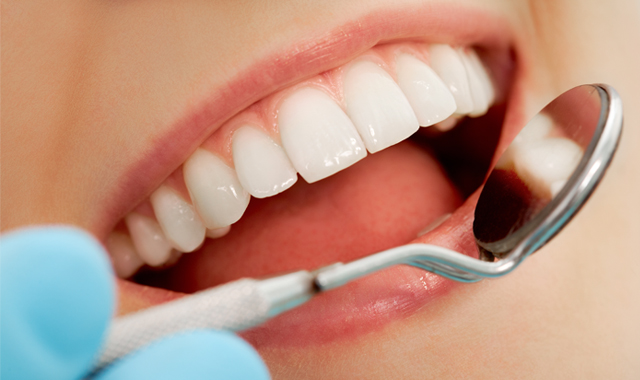
インプラント治療が終わっても、口腔内環境を保ち続けることが大切です。インプラントの治療箇所が歯周病になることでインプラント周囲炎となり、周囲の天然歯にも悪影響を及ぼします。当院では定期検診にてインプラント治療を行われた患者様に対し、お口の状態や年齢に合わせた適切なメインテナンスの時期をお伝えしています。インプラントを長く使い続け、咬める喜びを感じ続けてください。
一人ひとりに合った入れ歯を作製します
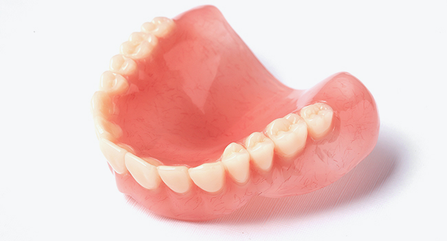
当院では「見た目や咬み心地にこだわりたい」「今の入れ歯に不満がある」といった患者様の悩みやご要望にお応えするため、保険・自費を問わず入れ歯の作製を行っています。患者様にぴったりと合う入れ歯を作製いたしますので、ご相談ください。
保険診療と自費診療で作製する入れ歯の違い
保険診療と自費診療の入れ歯の違いは以下の通りです。
| 保険診療の入れ歯 | 自費診療の入れ歯 | |
|---|---|---|
| 人工歯の形・色味 | 少ない | 多い |
| 素材 | 限られている | 選択肢が豊富 |
| 製作にかかる時間 | 少ない | 多い |
| 強度 | やや劣る | 高い |
| 固定方法 | 少ない | 多い |
| 咬み合わせ | 個人差がある | 天然歯に近い咬み心地 |
| 治療期間 | 1ヶ月～1ヶ月半ほど | 3ヶ月～8ヶ月ほど |
当院の入れ歯メニュー
プラスチックの入れ歯（保険診療）
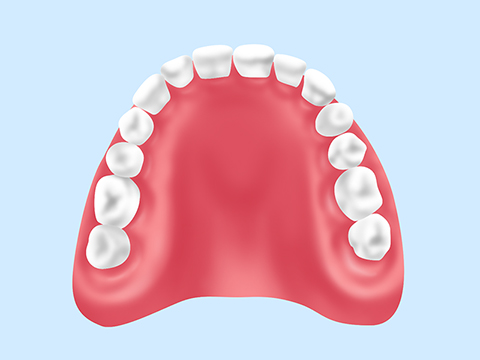
レジン（歯科用プラスチック）を使った保険診療の入れ歯です。見た目にも目立ちやすく、装着感では自費の入れ歯に劣りますが、比較的安価のため多くの方に選ばれています。
ノンクラスプデンチャー（自費診療）
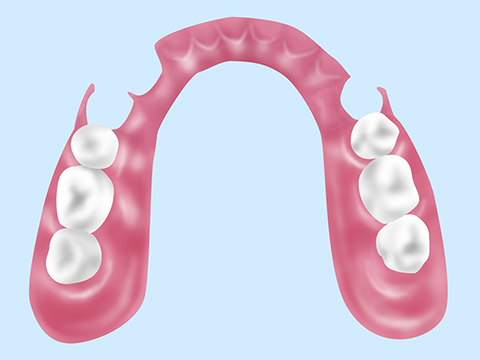
歯ぐきとの固定にクラスプ（金属製のバネ）を使わず、金属アレルギーの心配のない樹脂製の義歯床で支える入れ歯です。やさしいフィット感で目立ちにくく、強度が高いため部分入れ歯などにも用いられます。
マグネットデンチャー（自費診療）
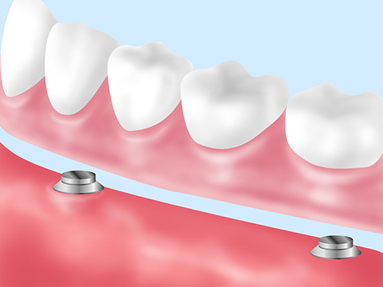
一般的な入れ歯は天然歯にクラスプをかけて固定するのに対し、歯ぐきに埋め込んだ磁性金属と、入れ歯内の小型磁石を使って固定する入れ歯です。着脱が容易でお手入れもかんたんです。ほとんどの歯を失った方や、衛生面を気にされる方におすすめです。
コーヌスクローネデンチャー（自費診療）
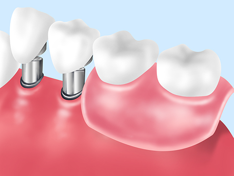
二重構造の入れ歯で、バネを使わず茶筒状の金属を重ね合わせて固定します。クラスプを使わないため審美性に優れています。コンパクトで固定しやすく、他の入れ歯とくらべて発音もしやすくなっています。
金属床[ゴールド床、チタン床、コバルトクロム床]（自費負担）
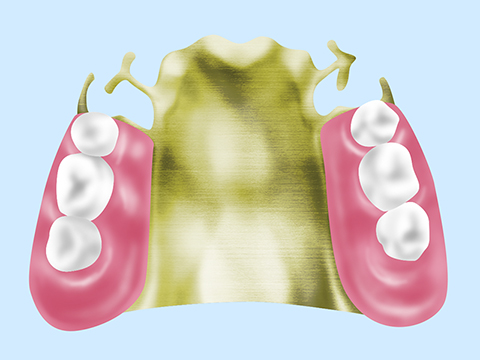
歯ぐきの部分がゴールドやチタン、コバルトクロムなどの金属で作られています。金属製のため強度が高く、床部分を薄く作ることが可能です。とくに、ゴールド床を選択すれば金属アレルギーが起りにくく、熱を伝えるため食べ物の温度を感じることができます。
定期的なメインテナンスが重要です
歯ぐきは年齢とともに痩せていくため、はじめはぴったり合っていても、次第に入れ歯が合わなくなってきます。定期的な調整とメインテナンスで長期的に使い続けられます。当院では入れ歯のメインテナンスを実施。装着しづらくなったり、経年による変化が気になりましたら、当院までご相談ください。患者様の口腔内の形に合わせて入れ歯の調整を行います。